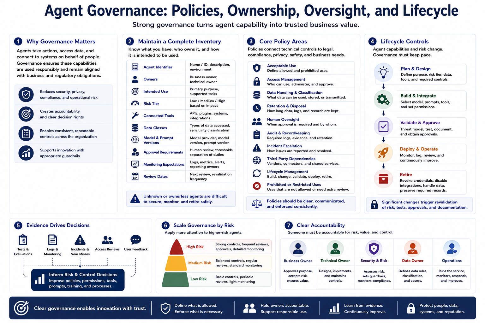

Defending Against Agent Abuse
Governance and Organizational Controls
Connecting to LMS... Progress: in progress
Version 1.0 | Date: 2026-06-21
This course provides educational information regarding defensive security controls for AI agents. It is not offensive security training, exploit development instruction, or legal advice.

Narration
Governance establishes the policies, ownership, and oversight needed to manage agents across an organization. A useful program maintains an inventory of agents, accountable business and technical owners, intended use, risk tier, connected tools, data classes, model and prompt versions, approval requirements, monitoring expectations, and review dates. Unknown or ownerless agents are difficult to secure responsibly.
Policies should address acceptable use, access management, data handling, retention, human oversight, audit requirements, incident escalation, third-party dependencies, and lifecycle management. Governance should also define which uses are prohibited or require additional review. These decisions connect technical controls to legal, compliance, privacy, safety, and business obligations without expecting the model to interpret policy on its own.
Lifecycle controls matter because agent capabilities change. New tools, broader permissions, different models, additional data sources, or expanded user groups can alter risk. Significant changes should trigger updated threat modeling, testing, approvals, documentation, and monitoring. Retirement should include revoking credentials, disabling integrations, handling retained data, and preserving required records.
Effective governance supports business value rather than treating every change as identical. Risk tiers can scale requirements to impact. Evidence from tests, logs, incidents, near misses, access reviews, and user feedback should inform decisions. Clear accountability ensures that someone can approve risk, respond to problems, and improve the system throughout its life.